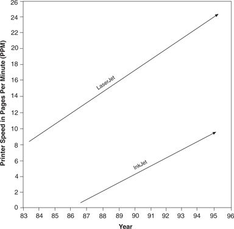

Hewlett-Packard’s experience in the personal computer printer business illustrates how a company’s pursuit of a disruptive technology by spinning out an independent organization might entail, in the end, killing another of its business units.
Hewlett-Packard’s storied success in manufacturing printers for personal computers becomes even more remarkable when one considers its management of the emergence of bubble-jet or ink-jet technology. Beginning in the mid-1980s, HP began building a huge and successful business around laser jet printing technology. The laser jet was a discontinuous improvement over dot-matrix printing, the previously dominant personal computer printing technology, and HP built a commanding market lead.
When an alternative way of translating digital signals into images on paper (ink-jet technology) first appeared, there were vigorous debates about whether laser jet or ink jet would emerge as the dominant design in personal printing. Experts lined up on both sides of the question, offering HP extensive advice on which technology would ultimately become the printer of choice on the world’s desktops. 15
Although it was never framed as such in the debates of the time, inkjet printing was a disruptive technology. It was slower than the laser jet, its resolution was worse, and its cost per printed page was higher. But the printer itself was smaller and potentially much less expensive than the laser jet. At these lower prices, it promised lower gross margin dollars per unit than the laser jet. Thus, the ink-jet printer was a classic disruptive product, relative to the laser jet business.
Rather than place its bet exclusively with one or the other, and rather than attempt to commercialize the disruptive ink-jet from within the existing printer division in Boise, Idaho, HP created a completely autonomous organizational unit, located in Vancouver, Washington, with responsibility for making the ink-jet printer a success. It then let the two businesses compete against each other. Each has behaved classically. As shown in Figure 5.4, the laser jet division has moved sharply upmarket, in a strategy reminiscent of 14-inch drives, mainframe computers, and integrated steel mills. HP’s laser jet printers can print at high speeds with exceptional resolution; handle hundreds of fonts and complicated graphics; print on two sides of the page; and serve multiple users on a network. They have also gotten larger physically.
The ink-jet printer isn’t as good as the laser jet and may never be. But the critical question is whether the ink jet could ever be as good a printer as the personal desktop computing market demands. The answer appears to be yes. The resolution and speed of ink-jet printers, while still inferior to those of laser jets, are now clearly good enough for many students, professionals, and other un-networked users of desktop computers.
HP’s ink-jet printer business is now capturing many of those who would formerly have been laser jet users. Ultimately, the number of users at the highest-performance end of the market, toward which the laser jet division is headed, will probably become small. One of HP’s businesses may, in the end, have killed another. But had HP not set up its ink-jet business as a separate organization, the ink-jet technology would probably have languished within the mainstream laser jet business, leaving one of the other companies now actively competing in the ink-jet printer business, such as Canon, as a serious threat to HP’s printer business. And by staying in the laser business, as well, HP has joined IBM’s mainframe business and the integrated steel companies in making a lot of money while executing an upmarket retreat. 16
Figure 5.4 Speed Improvement in InkJet and LaserJet Printers

Source: Hewlett-Packard product brochures, various years.